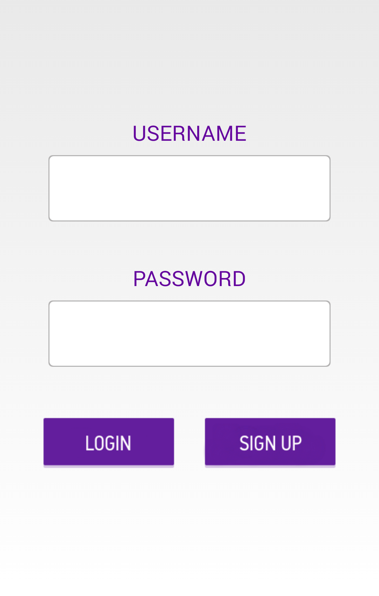
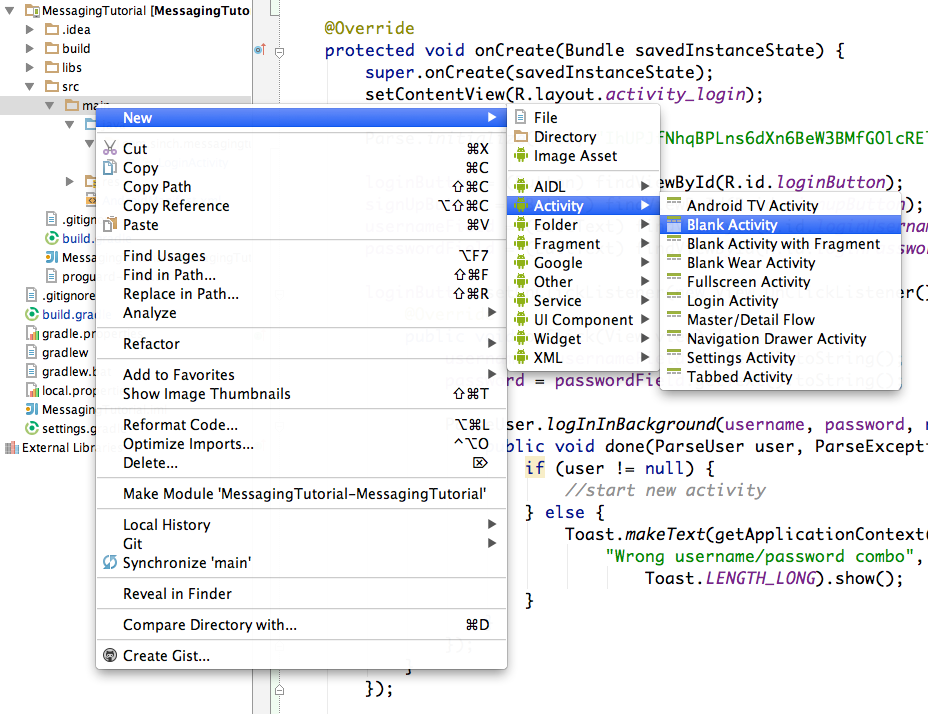
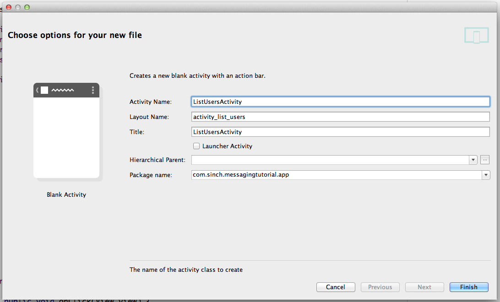
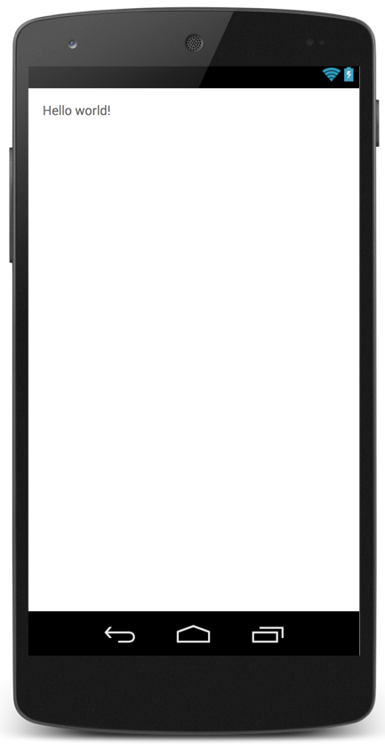
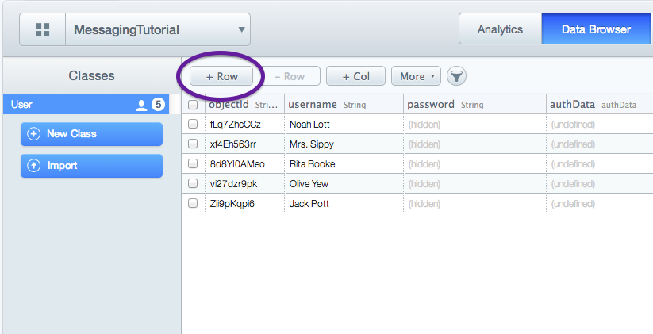

This tutorial will guide you through building a fully functional instant messaging application using the Sinch Android SDK. By the end of this tutorial, your app will allow users to sign up and log in, see a list of all users, and instant message with any user. Your app will look similar to this:

If you get stuck at any point, the completed source code for this tutorial is available on our Github.
To get the ball rolling, we've created a skeleton project that you can clone from this Github repository. Once you've cloned the project, you will need to import it into Android Studio and make sure everything is working properly.
The skeleton project will save you from creating a new project in Android Studios, and includes: a basic login activity, a login layout, and some graphics to make things look nice! Go ahead and run the skeleton project now to make sure everything is working properly.
We are going to use a service called Parse to keep track of our users. Parse will allow us to securely log in our users, and save user data, without having our own servers. Sign up for an account here.
Then, follow this link to create a new app. (The name of your app is not important.) Take note of your Application ID and Client Key.
At this point, you need to download the Parse SDK and extract the contents into your libs folder. Parse will walk you through how to set this up. After you've added it to your libs folder, in Android Studio, navigate to the .jar file in your libs directory, right-click, and select "Add as Library."
Parse requires internet and access to the network state. To grant these permissions, in AndroidManifest.xml, add the following permissions above the <application> tag:
<uses-permission android:name="android.permission.INTERNET" /> <uses-permission android:name="android.permission.ACCESS_NETWORK_STATE" />
Now, we need to initialize Parse every time our user opens the app. Therefore, it makes sense to initialize Parse in the onCreate method of our LoginActivity. Add the following line of code, and replace the placeholders with the application id and client key you got from Parse.
Parse.initialize(this, "ApplicationID", "ClientKey");
In addition, add com.parse.Parse as an import in LoginActivity.java,
import com.parse.Parse;
This is a good spot to take a break and run your app. You won't see any visual differences, but its good to make sure that nothing is broken before we move on!
Let's take care of the "login" and "sign up" buttons now. First, declare the two buttons inside LoginActivity.
private Button signUpButton; private Button loginButton;
(You will also need to import android.widget.Button)
Now, we can define the login and signup buttons and set up an onClickListener for each of the buttons. Add the following code at the end of your onCreate method in LoginActivity.java. For the time being, a short toast message will appear when you click either of the buttons.
loginButton = (Button) findViewById(R.id.loginButton);
signUpButton = (Button) findViewById(R.id.signupButton);
loginButton.setOnClickListener(new View.OnClickListener() {
@Override
public void onClick(View view) {
Toast.makeText(getApplicationContext(), "Login",
Toast.LENGTH_SHORT).show();
}
});
signUpButton.setOnClickListener(new View.OnClickListener() {
@Override
public void onClick(View view) {
Toast.makeText(getApplicationContext(), "Sign Up",
Toast.LENGTH_SHORT).show();
}
});
(Also import android.widget.Toast and android.view.View)
Time to run the app! This time when you run it, try clicking both of the buttons to make sure the correct toast messages appear.
Let's get started on implementing logic into those button clicks. First, we need to store what the user typed into the username and password fields. Declare the username and password fields, as well as variables to store their values in.
private EditText usernameField; private EditText passwordField; private String username; private String password;
And inside the onCreate method, use the ids from activity_login.xml to define the EditText fields. Put the code before the onClick methods.
usernameField = (EditText) findViewById(R.id.loginUsername); passwordField = (EditText) findViewById(R.id.loginPassword);
Note: From now on, I will not specify all of the classes you need to import. Android Studio will suggest imports for you, and instruct you on how to add them.
We will use the Parse method logInInBackground to securely log our users in. We just need to grab the text typed in the username and password fields, and pass it to this method, and display a toast message if Parse throws an exception. The following code belongs in your loginButton onClickListener.
username = usernameField.getText().toString();
password = passwordField.getText().toString();
ParseUser.logInInBackground(username, password, new LogInCallback() {
public void done(ParseUser user, ParseException e) {
if (user != null) {
//start new activity
} else {
Toast.makeText(getApplicationContext(),
"Wrong username/password combo",
Toast.LENGTH_LONG).show();
}
}
});
For new users that want to sign up, we use the Parse method signUpInBackgroud. Again, we grab the text typed in the username and password fields, create a new ParseUser, sign the user up, and then display a toast message if Parse throws an error. Put this code in your signUpButton onClickListener.
username = usernameField.getText().toString();
password = passwordField.getText().toString();
ParseUser user = new ParseUser();
user.setUsername(username);
user.setPassword(password);
user.signUpInBackground(new SignUpCallback() {
public void done(ParseException e) {
if (e == null) {
//start new activity
} else {
Toast.makeText(getApplicationContext(),
"There was an error signing up."
, Toast.LENGTH_LONG).show();
}
}
});
Things are about to get exciting! You can now run your app and sign up your first user. After you click the sign up button, head over to the Parse website to make sure that everything worked. Go to https://www.parse.com/apps/yourapp/collections where "yourapp" is the name of your app, and navigate to the data browser. You should see one entry in your database with the username you just typed in!
One last login-related bit of code that we'll add is to check to see if a user is already logged in when the app is launched. If a user is already logged in, we don't even want to load the layout, so put this code above the setContentView method.
ParseUser currentUser = ParseUser.getCurrentUser();
if (currentUser != null) {
//start new activity
}
You now have three different spots in this onCreate method where we need to start the next activity. This would probably be a good time to create that new activity! The next activity that users will go to is a list of all users using the app. It will look like this when we're done:
To create our new activity, follow the steps on the screenshot below.
We will name this actity ListUsersActivity, since it will show a list of all users.
This will create two main files for you: ListUsersActiviy.java and activity_list_users.xml. It will also create a menu layout for you. We won't be using the menu file, so feel free to delete it. In addition, it will add the activity to your to your manifest file. If you're curious to see what it added, head over to AndroidManifest.xml and you will see this new code:
<activity
android:name=".ListUsersActivity"
android:label="@string/title_activity_list_users" >
</activity>
The last bit of housekeeping before we use our new activity is to delete the boilerplate code that we won't be using. In ListUsersActivity.java, there are three methods: onCreate, onCreateOptionsMenu, and onOptionsItemSelected. We will only use onCreate, so just delete the other two. And lastly, change ListUsersActivity to extend Activity, not ActionBarActivity.
public class ListUsersActivity extends Activity
Let's head back to LoginActivity.java now. In all three places where we have left a "start new activity" comment, you will want to add the following code. This defines a new intent, and then starts the list users activity.
Intent intent = new Intent(getApplicationContext(), ListUsersActivity.class); startActivity(intent);
Take a moment here to run your app and verify that your intent works in all three scenarios (already logged in, log in, sign up). Since we don't have a log out button, uninstall the app if you want to log out. ListUsersActivity should look like this right now:
This would be a good time to head time to your Parse data browser and manually add a few test users to populate our list.
We want activity_list_users.xml to be a ListView, so replace the code currently in there with this:
<ListView xmlns:android="http://schemas.android.com/apk/res/android" xmlns:tools="http://schemas.android.com/tools" android:layout_width="match_parent" android:layout_height="match_parent" android:padding="16dp" tools:context="com.sinch.messagingtutorial.app.ListUsersActivity" android:background="@color/off_white" android:id="@+id/usersListView"> </ListView>
We also need to create an xml file to tell our app how to display each item of the list. In the layout directory, create a new file and name it user_list_item.xml. It will contain only the following text view:
<?xml version="1.0" encoding="utf-8"?>
<TextView xmlns:android="http://schemas.android.com/apk/res/android"
android:id="@+id/userListItem"
android:textColor="@color/very_dark_gray"
android:padding="16dp"
android:layout_width="fill_parent"
android:layout_height="fill_parent"
android:textSize="20sp" />
Moving back to ListUsersActivity.java, we are going to add just one line of code to the end of our onCreate method:
setConversationsList();
Now, let's define setConversationsList:
private void setConversationsList() {
currentUserId = ParseUser.getCurrentUser().getObjectId();
names = new ArrayList<String>();
ParseQuery query = ParseUser.getQuery();
query.whereNotEqualTo("objectId", currentUserId);
query.findInBackground(new FindCallback<ParseUse>>() {
public void done(List<ParseUser> userList, ParseException e) {
if (e == null) {
for (int i=0; i<userList.size(); i++) {
names.add(userList.get(i).getUsername().toString());
}
usersListView = (ListView)findViewById(R.id.usersListView);
namesArrayAdapter =
new ArrayAdapter<String>(getApplicationContext(),
R.layout.user_list_item, names);
usersListView.setAdapter(namesArrayAdapter);
} else {
Toast.makeText(getApplicationContext(),
"Error loading user list",
Toast.LENGTH_LONG).show();
}
}
});
}
Whew - there's a lot going on in that method. Let's make sure we're all on the same page. First, we store the current user's id, and create an empty array of strings (for the user names). Then, we query our Parse database for all users that are not the current user (since it would be silly to chat with yourself!) Once we have a list of ParseUsers, we use a for loop to go through and store their name as a string. Finally, we define the list view and adapter, and tell our app that nameArrayAdapter should be used to populate usersListView. If Parse returns an error, we will show a toast message to our user.
And, if you didn't already declare the variables from setConversationsList, here's quick copy and paste code:
private String currentUserId; private ArrayAdapternamesArrayAdapter; private ArrayList names; private ListView usersListView;
Now, we are going to make the list of users clickable. If you click on the name of a user, we want it to open a private instant messaging conversation with them.